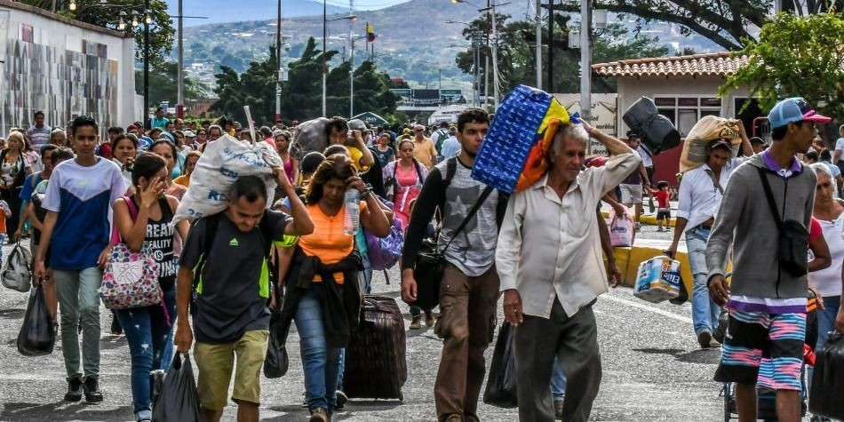

Salud mental y Covid-19: ¿Esto es una pausa o un reinicio?
El mundo se encuentra viviendo una de las situaciones más extrañas y preocupantes en este tiempo. Sin duda, el coronavirus (COVID-19) tomo desprevenida a toda la humanidad. Parece que el ser humano se ha quedado sin la libertad de disfrutar la vida. Ahora se vive con miedo a morir, en una economía global que se está cayendo. Esto es solo una corta lista a la que se suman algunos cambios de hábitos en la sociedad como: el de higiene, consumo y las nuevas formas de trabajar..
Todo esto, mientras no se tenga una vacuna que genere una cura efectiva.Sin embargo, la pregunta de muchas personas es ¿Cómo quedamos después de esto? Hace poco en un programa argentino, escuché en una entrevista al neurólogo Facundo Manes. Él se refería "a una epidemia mental" pues asegura que la salud física y espiritual es integral y hoy el mundo está exhausto.
Entre tantos puntos interesantes dijo que la ansiedad y la depresión están afectando a la mitad de la población. Razón lógica porque a su parecer se enfrenta algo nuevo con mucha incertidumbre. Por ello, aseguro que la inversión en salud mental y desarrollo cognitivo será clave para la recuperación y la resiliencia post COVID19.
¿Todo esto es cierto?.. Si...Pero viendo el lado positivo, también leí recientemente las declaraciones de Klaus Schwab, presidente del Foro Económico Mundial quien hablo del "gran reinicio". A su parecer, la pandemia representa una oportunidad, inusual y reducida, para reflexionar, re imaginar y reiniciar nuestro mundo y forjar un futuro más sano, equitativo y próspero.
Tal parece, que la humanidad y la Argentina tendrán que adaptarse a los nuevos cambios. Así que la resiliencia descrita por especialistas como la capacidad que tiene una persona para superar circunstancias traumáticas es una de las alternativas para seguir el camino de la vida.
>Por: Raenyira Pazos
Buenos Aires la Europa de America
Buenos Aires, sin duda es uno de los lugares más hermosos de Sur América.¿Sabían
que le llaman la Europa del continente? . Ciertamente, en ella siempre ha predominado la identidad
europea. No solo en su población sino también
en la arquitectura que imita la forma francesa, inglesa, alemana e italiana, sinónimo de la
herencia extranjera. . Quien camina por sus calles puede observar una mezcla que va de lo clásico a
lo moderno. Puerto Madero es una
de
las zonas de la ciudad que ha ido creciendo vertiginosamente con elegantes edificios. Allí se
encuentran el famoso puente de la mujer diseñado por el arquitecto español Santiago Calatrava obra
de la arquitectura moderna y
muchos
nuevos y altos Lo importante es que todo este avanzado desarrollo se ha hecho entre la
arquitectura clásica que rodea algunos barrios de la ciudad como Recoleta (Un área próspera,
conocida por sus townhouses estilo París,
antiguos
palacios opulentos y boutiques de lujo) o Retiro (calles tranquilas con galerías de arte y
cafés elegantes conducen hacia la concurrida estación de tren de Retiro, un hito de estilo
británico) Esto es muestra que durante siglos
la ciudad se ha ido adaptando a los cambios como cualquier URBE en medio de tanto caos. Al
contemplar todo aquello y comparándolo con nuestras vidas; observo que la ciudad ha permanecido en
el tiempo, en la historia ha hallado
un modo de volverse a levantar. . Esta ciudad tan bonita me ha enseñado que debemos estar
siempre preparados para infinitas oleadas de transformación. Considero que en el amor o en la vida
personal nos merecemos algo más que
tener
miedo a sufrir. Finalizo con las palabras de la escritora Elizabeth Gilbert " Las ruinas son un
regalo, las ruinas son el camino a la transformación
Por: Raenyira Pazos

Venezuela y su crisis humanitaria
Los venezolanos que en su gran mayoría han decido salir de la nación no lo planificaron, solo han sido obligados, han huido debido al contexto social, político y económico en el que se encuentra el país caribeño. A pesar del país en el que se vivía, rico en petróleo y con universidades de excelencia. A pesar del horror y de un miedo permanente. Hoy, jóvenes e integrantes de cada familia de distintas clases sociales, con título o sin él, por aire, mar o tierra, les tocó emigrar. Han decido salir de una Venezuela bloqueada en todas las coordenadas al no encontrar una perspectiva de vida, una oportunidad de crecer y trabajar. Por ello, unos 2 millones de venezolanos han optado por abandonar la nación, porque intuyen que el problema no se resolverá de un día para otro. Ese joven, hombre o mujer que busca otros horizontes siente que no debe esperar a que pasen los años y Venezuela siga siendo la misma. El panorama nada alentador para la población: altas cifras de inflación, inseguridad, desabastecimiento de alimentos, medicamentos y la falta de dialogo y liderazgo son algunos de los factores que aniquilan al venezolano y lo hacen huir en busca de paz, tranquilidad y bienestar a países europeos como: España, Italia y Portugal, y latinoamericanos: Colombia, Ecuador, Chile, Costa Rica, Panamá y Argentina. Venezuela es emigrante desde los años 90, el primer factor que generó la primera diáspora venezolana a países como Estados Unidos y España fue por la inseguridad previa a los gobiernos de Hugo Rafael Chávez. Sin embargo esta nación, ha estado constituida por un número significativo de extranjeros que llegaron hace muchos años por diferentes motivos. Esto cambió y modificó para siempre el curso del país encaminándolo hacia nuevas formas de vida y desarrollo. Miles de extranjeros ingresaron al país entre los años 1936 y 1952. Fue el periodo con el mayor flujo migratorio y llegó a su fin durante el gobierno de Marcos Pérez Jiménez. Esta generación influyó en gran medida en la cultura en la producción e intelecto del venezolano, el país lo necesito y los recibió para su desarrollo, esto ha cambiado, hoy día no hay lugar en el mundo entero con todas las características. Se puede decir que el venezolano cumple con un ciclo que si se suma a la época de los 90 ya lleva 25 años siendo emigrante. Venezuela necesita construir un camino con gente profesional que se ha ido porque intuye que no es parte de la solución país y ya no confía en sus líderes. La generación de profesionales que busca otras oportunidades lejos de casa es fuerte y ganará cualquier país que los acoja, porque serán ciudadanos agradecidos con la nación que les dio la oportunidad les vaya bien o les vaya mal desempeñándose en su área o en cualquier tarea sencilla. Sin embargo, también es cierto que la diáspora de profesionales ha afectado también a la academia venezolana, hoy día las universidades venezolanas de excelencia académica mundial no dejan de ser un reflejo de lo que sucede en el país latinoamericano. Reconstruir la educación es el camino a pesar de lo complejo y difícil que pueda ser. En su mayoría los profesionales se van peleados con una cultura, el pueblo venezolano es culpable de lo que ocurre en el país. Ser emigrante te enseña a entender la idiosincrasia a tener paciencia a transformarse, nutrirse, los países latinos hablan muchas cosas en común pero tienen diferentes culturas, arquetipos características que se deben aprender y respetar ya que el ser humano no es nadie para decir que cosa es buena o mala en cualquier parte del mundo. El venezolano cambia siendo emigrante, de muchas maneras, y esta generación de venezolanos en particular aportara su bagaje, sus músculos, su intelecto y serán hijos de la nación que los reciba y depende de cómo les vaya regresarán o no a Venezuela. Si lo hacen llegaran nutridos de ánimos de reconstrucción y con fortaleza de luchadores.
>Por: Raenyira Pazos
